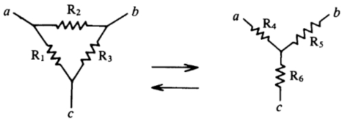
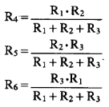
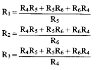

△←→Y的變換
程式編寫日期: 2014年8月31日
描述:

| 程式編號 0: △→Y | 程式編號 1: Y→△ |
|  |  |
程式 (69 bytes，使用記憶A, B, C及D)
?→D: ?→A: ?→B: ?→C: D => Goto 0:
A + B + C→D: AB÷D◢ BC÷D◢ CA÷D◢
Lbl 0: AB + BC + CA→D: D÷B◢ D÷C◢ D÷A
例題1: 若R1=12Ω，R2=47Ω，R3=82Ω，計算R4，R5及R6。
按 Prog 1 再按 0 EXE (0代表△→Y變換)
12 EXE 47 EXE 82 EXE (顯示R4為 4Ω)
EXE (顯示R5為 27.33333333Ω) EXE (顯示R6為 6.978723404Ω)
計算完結後按 AC 終止程式
例題2: 若R4=100Ω，R5=150Ω，R6=220Ω，計算R1，R2及R3。
按 Prog 1 再按 1 EXE (1代表Y→△變換)
100 EXE 150 EXE 220 EXE (顯示R1為 466.6666667Ω)
EXE (顯示R2為 318.1818182Ω) EXE (顯示R3為 700Ω)
返回 CASIO fx-50FH、fx-3650P II、fx-50FH II及fx-50F PLUS 程式集